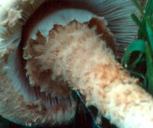
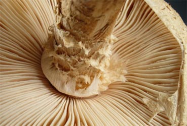

| name | Amanita manicata |
| name status | nomen acceptum |
| author | (Berk. & Broome) Pegler |
| english name | "Hair-Shirt Lepidella" |
| images |
 1. Amanita cf. manicata, Hawaii, U.S.A.  2. Amanita cf. manicata, Auckland, New Zealand.  3. Amanita manicata, from original plate, Sri Lanka. |
| intro |
The following description is based on the descriptions of Pegler (1986) and Petch (1910). |
| cap |
The cap of Amanita manicata is 60 - 110 mm wide, yellowish-brown to pale tawny brown, at first hemispherical then broadly bell-shaped. The nonstriate margin is initially incurved, then finally curves upward. It is appendiculate, with large, floccose fragments that hang down up to 20 mm; these fragments are often tawny and floccose on the side facing out. The flesh is 10 mm thick over the stem, rather fleshy, white, soft and spongy; the cap flesh does not form a socket for the stem but the flesh of the two are quite distinct. The cap is initially covered entirely by a pale tawny (Petch) volva, which cracks into soft, removable, floccose warts, eventually revealing an ochraceous buff color underneath. [Note: since A. manicata appears to belong in subsection Vittadiniae, it is not the cap color which is pale tawny at first and becomes browner, but the surface of the volva. When paler colored material is exposed by the cracking of the volval surface, this material may also be part of the volva or it may be part of the cap flesh. A true cap skin (pileipellis) is not present in the known species of subsection Vittadiniae.] |
| gills |
The gills are free and distant from the stem, rather crowded, cream color then whitish or with a pinkish tint, somewhat ventricose, narrowing nearly to a point at the stem end but more rounded at the cap margin (Petch) or narrowing on both ends (Pegler), up to 12 mm broad, with entire and crenate edges sometimes found on a single specimen (Petch). Short gills are described by Petch as half the breadth of the longer ones—a quite remarkable character not otherwise known to us in Amanita. Petch further states that the short gills are of varying lengths—between 1/3 to 1/2 of the regular sized gills; however, it is likely that other (at least other smaller) lengths can be found. |
| stem |
The stem is 60 - 160 × 6 - 20 mm, cylindric (Pegler) and sometimes slightly narrowing upwards (Petch), sometimes slightly inflated at the base (Petch), solid, white, rather brittle (Petch), with no appreciable bulb (Pegler) and sometimes a slight bulb that is 15 - 25 mm wide (Petch). The flesh is white (Petch). The decoration of the stem is so unusual that we decided to give it a separate paragraph. Petch innovates in the area of terminology in order to create a true and vivid picture. Petch describes the stem overall as giving the impression of being an inverted cone. He emphasizes that this impression is entirely caused by the dense decoration which becomes more intense and thicker as one proceeds upwards. At the base the stem's decoration is composed of minute, white flocculence; proceeding up the stem, a tawny color appears and the flocculence is replaced by "shaggy scales of long silky fibrils, densely crowded and increasing in quantity..., in more or less annular superposed sheets." He notes that while the actual stem is 12 mm wide at the densest point of decoration; the decoration is 20 mm wide at that point. Moreover, he prefers the word "muff" to ring because of the appearance of this densely fluffy material encircling the stem. The adjective "manicatus" means "sleeved" and, in botany, is used to describe dense hairiness that is so thickly interwoven it can be stripped off like a sleeve...or a muff. In Petch's time this species was placed in Lepiota (the initial disposition of many species of Amanita subsection Vittadiniae). Petch was clearly expecting a ring on the stem, but found what appears to be a hoop skirt under which someone has set a cartoon animal that has received a terrible fright and has all its hair standing out in every direction. Petch continues his description saying the upper most part of the stem "is clothed with a white, soft, silky, fibrillose layer which slopes downwards and outwards over the lower tawny scales and forms the upper edge of the muff." While we are not certain that either of the species from which illustrations have been taken is indeed A. manicata; nevertheless, we received two photographs of very similar stipe decoration in the year 2005-2006. These illustrations can be found below, at the end of this page. Pegler notes that handling the stem produces ochraceous buff bruising of the floccose decorations; and that volval remnants are concentrated in the mid-portion of the stem where they can be found as tawny brown squamules which seem to lie on the surface of the intensely squamose material previously described. |
| odor/taste |
The odor is strong, sweet, and unpleasant. Petch described the odor as resembling "new tan kid gloves." |
| spores |
Pegler gives the following spore measurments: 7.3 - 8.7 × 5.7 - 8 µm. From this data, we conclude that the spores are broadly ellipsoid to ellipsoid (possibly sometimes subglobose) and amyloid. No one has recorded whether there are clamps at the bases of basidia. |
| discussion |
Unfortunately the type collection is reported to be in a "very poor state of preservation" and collections made in Sri Lanka around 1910 also have become useless according to Pegler. There is reputed to be a watercolor illustration of this species in Peradeniya, Sri Lanka, but this has never been published to our knowledge. Although Pegler does not indicate the presence of clamps in the present species, he does indicate that he believes A. manicata is "extremely close to, and probably identical with, A. nauseosa (Wakef.) D. A. Reid." We are inclined to disagree on taxonomic synonymy, but placement in stirps Nauseosa seems plausible on other grounds. It is necessary (as Pegler noted) that fresh material be obtained, preserved well, and examined before it is destroyed by mold. Species of subsect. Vittadiniae are notoriously difficult to conserve because they pick up humidity from the air with an unusual vigor. A very well dehumidified and cool (if not cold) room is necessary for the best chance at long-term preseration. This species first became of interest to us when we received material from Don Hemmes in Hawaii that seems to satisfy the limited description available for this species. Coincidentally, while editing the first version of this page we received photographs showing a very similar (if not identical) species of stirps Nauseosa collected several times in the last four decades in a grassy park in Auckland, New Zealand. The following are illustrations from Hawaii (USA) and New Zealand showing volval material decorating stems in a manner similar to that described for the present species.  On the left is a picture of a freshly opened mushroom collected by Don Hemmes in Hawaii on the islands of Kaua'i, Oahu, and on both windward and leeward coasts of the "Big Island" of Hawaii. He writes that he "usually find[s] them on lawns (hotel lawns, botanical garden lawns) and most recently on composted wood chips." Note the thin, ragged curtain of ring that hangs over the pale tawny or buff volval material. Notice also the ochraceous staining of the volval material where the mushroom was apparently held. Petch's description of a soft, white layer which slopes downwards and outwards over the tawny scales and "clothes" them can certainly be interpreted as in agreement with Dr. Hemmes' photograph. If there is any difficulty in saying that we have pictures showing ring and stipe decoration matching that of A. manicata, it is in the characterization of the upper layer as "silky" and "fibrillose." On the other hand, the corresponding membranous layer in the new photographs is thin and delicate (especially after being stretched by partial expansin of the cap). Note that gills can be viewed through the fragment of ring on the cap margin in the photograph below, and its ragged edge shows that it is dominated by radial fibers—probably bundles or singletons of the hyphae of which it is constructed.The next picture is of a specimen from New Zealand provided by Landcare  in parkland North of Auckland by Dr. Peter Austwick. It may be that Austwick's species is the same as the one sent by Dr. Hemmes. Note that in the New Zealand case, what we suppose to be Petch's "layer" has left a remnant on the cap margin—supporting the supposition that it is indeed a typical Amanita ring and formerly segregated the gills from the fluffy volva during advanced stages of development of the "button" mushroom. Additional information on New Zealand fungal specimens can be found at the Landcare Research website.Suppose that these still undetermined specimens can serve as a model for A. manicata with regard to the ring and stem decoration. The LR photograph shows that one could have missed the presence of an annulus if one examined only older material. The fibrils of the upper stipe appear to collapse into matted/felted scales, while the partial veil progressively disintegrates. In the second photograph the original strong differences between the two are being lost. On the other hand, the ring could tear away from the stipe at an earlier stage in expansion and to a greater degree than is shown in either photograph. Indeed, the 20 mm long appendiculate bits mentioned as sometimes hanging from the cap margin are very likely to be pieces of a shredded ring that is exposing its former "lower side" outward. The exposed surface is the side of the ring that was intimately connected with the brown fibrous internal limb of the volval during the later stages of development of the "button"—the internal limb develops between the stipe surface and the "lower" surface of the ring. The crazy coiffure of the upper stipe is very likely to have been created by the ring being pulled out and away from the stem by cap expansion. What would happen to the fibers attached to the underside of the ring during such expansion? It seems very likely that they would be stretched out from the stem until they separated from the underside of the ring or tore bits from the ring. An examination of the mechanics of the ring's connection to the unexpanded cap margin might prove very interesting. [Note: We are very interested in obtaining a scanned image of the painting said to be in Sri Lanka. Anyone having a relevant contact will receive our sincere gratitude in exchange for information leading to the appearance of that image at the top of this page.] It is interesting to note that some of the short gills in the New Zealand material do seem to be narrower than do the full length gills, but the photographs we've examined so far do not indicate that this is a constant character. [ Back to description of stem decoration ] We expect this web page to change as more specimens of Amanita manicata are made available to us.—R. E. Tulloss and L. Possiel |
| brief editors | RET |
| name | Amanita manicata | ||||||||||||||||||||||||||||
| author | (Berk. & Broome) Pegler. 1986. Kew Bull., Addit. Ser. 12: 216, fig. 45(A-B). | ||||||||||||||||||||||||||||
| name status | nomen acceptum | ||||||||||||||||||||||||||||
| english name | "Hair-Shirt Lepidella" | ||||||||||||||||||||||||||||
| synonyms |
≡Agaricus manicatus Berk. & Broome. 1871 ["1870"]. Trans. Linn. Soc. London 27: 150, pl. 33b.
≡Lepiota manicata (Berk. & Broome) Sacc. 1887. Syll. Fung. 5: 36.
?=Limacella magna B. Kumari & R. C. Upadhyay. 2013. Turk. J. Bot. 37: 1192, figs. 6-7(A-E). The editors of this site owe a great debt to Dr. Cornelis Bas whose famous cigar box files of Amanita nomenclatural information gathered over three or more decades were made available to RET for computerization and make up the lion's share of the nomenclatural information presented on this site. | ||||||||||||||||||||||||||||
| MycoBank nos. | 103035 | ||||||||||||||||||||||||||||
| GenBank nos. |
Due to delays in data processing at GenBank, some accession numbers may lead to unreleased (pending) pages.
These pages will eventually be made live, so try again later.
| ||||||||||||||||||||||||||||
| basidiospores | [138/7/2] (7.0-) 8.0 - 11.9 (-14.3) × (5.0-) 6.6 - 10.2 (-12.4) μm, (L = 8.6 - 9.5 (-10.6) μm; L’ = 9.3 μm; W = 7.4 - 8.9 (-9.3) μm; W’ = 8.1 μm; Q = (1.02-) 1.05 - 1.33 (-1.83); Q = 1.10 - 1.20 (-1.23); Q’ = 1.16). | ||||||||||||||||||||||||||||
| material examined | NEW ZEALAND: ?. U.S.A.: HAWAII—Hawaii - Hilo, Bayfront, 12.ix.2005 Dr. Don E. Hemmes 2571 (RET 387-4). | ||||||||||||||||||||||||||||
| editors | RET | ||||||||||||||||||||||||||||
Information to support the viewer in reading the content of "technical" tabs can be found here.
| name | Amanita manicata |
| bottom links |
[ Section Lepidella page. ]
[ Amanita Studies home. ]
[ Keys & Checklists ] |
| name | Amanita manicata |
| bottom links |
[ Section Lepidella page. ]
[ Amanita Studies home. ]
[ Keys & Checklists ] |
Each spore data set is intended to comprise a set of measurements from a single specimen made by a single observer; and explanations prepared for this site talk about specimen-observer pairs associated with each data set. Combining more data into a single data set is non-optimal because it obscures observer differences (which may be valuable for instructional purposes, for example) and may obscure instances in which a single collection inadvertently contains a mixture of taxa.


Text and User-Generated Sporographs are published under the Creative Commons License.

In the case of a taxon page, image credits are on the 'image' tab.